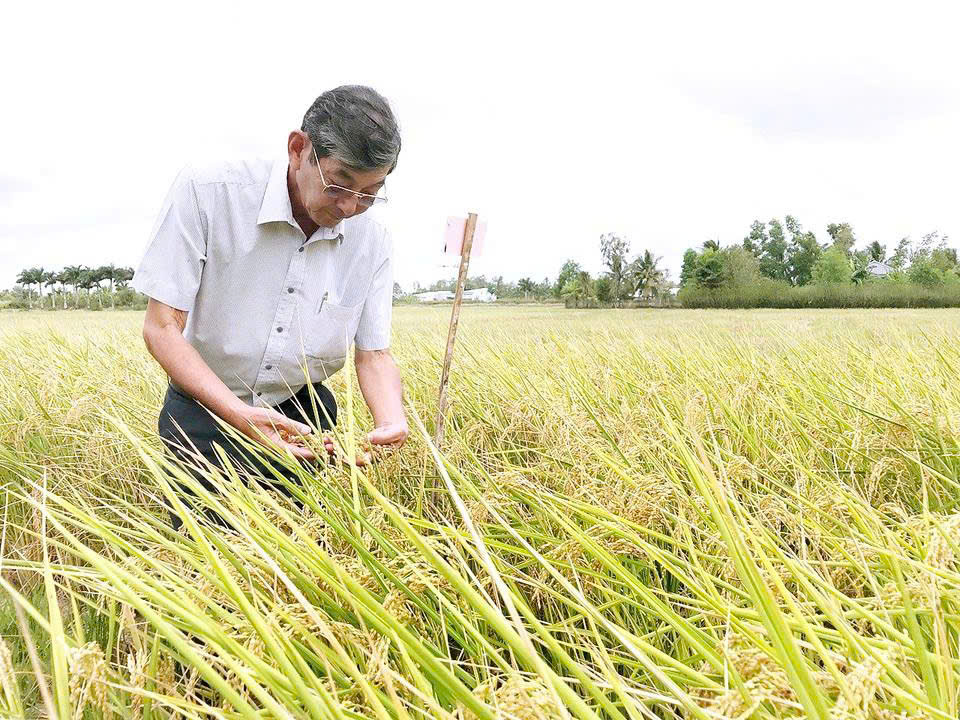
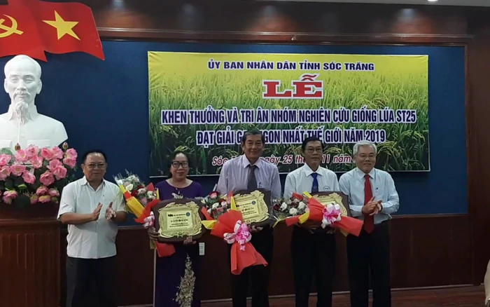
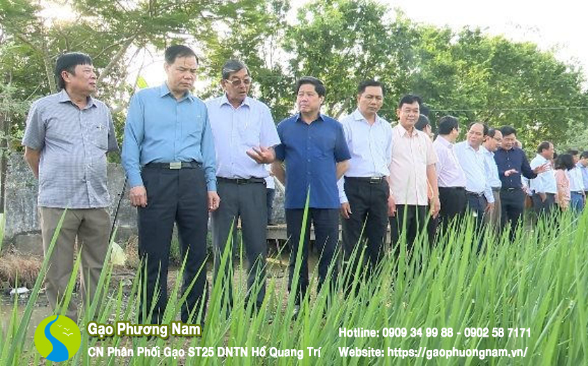
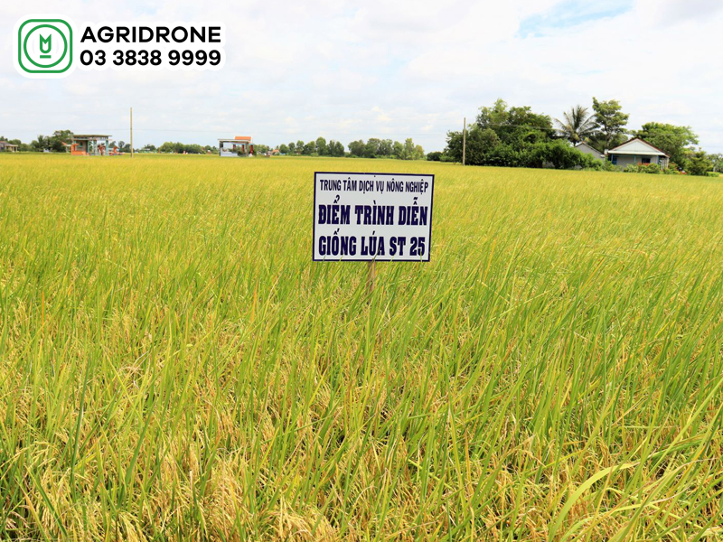
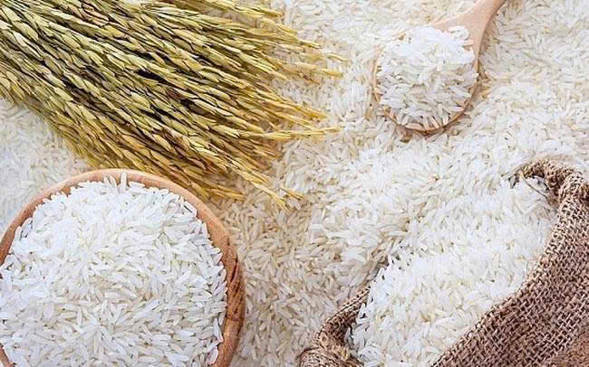
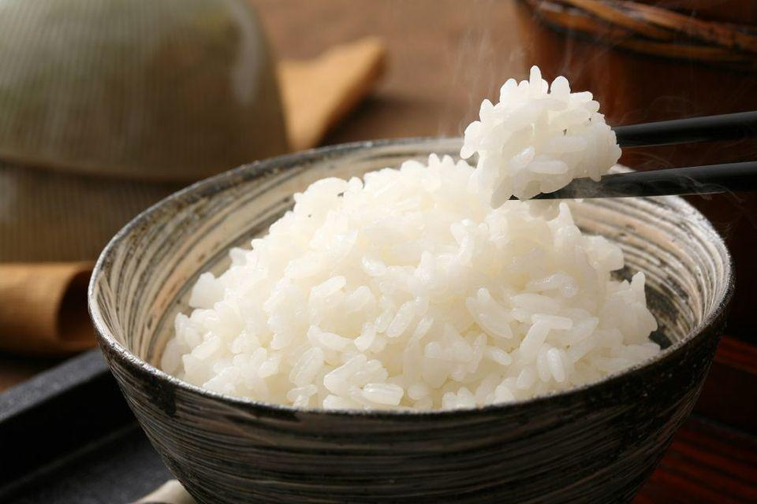
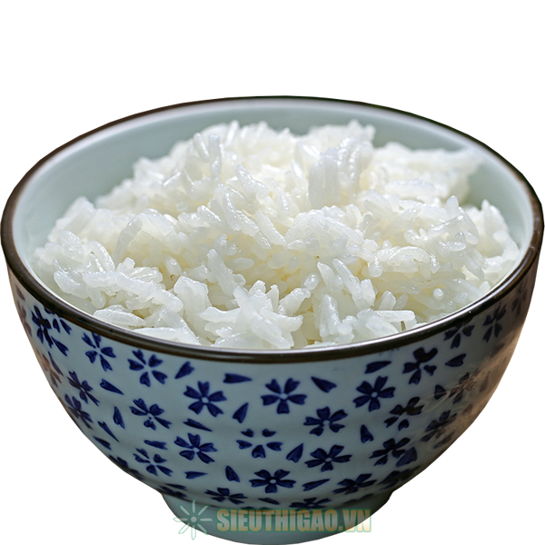
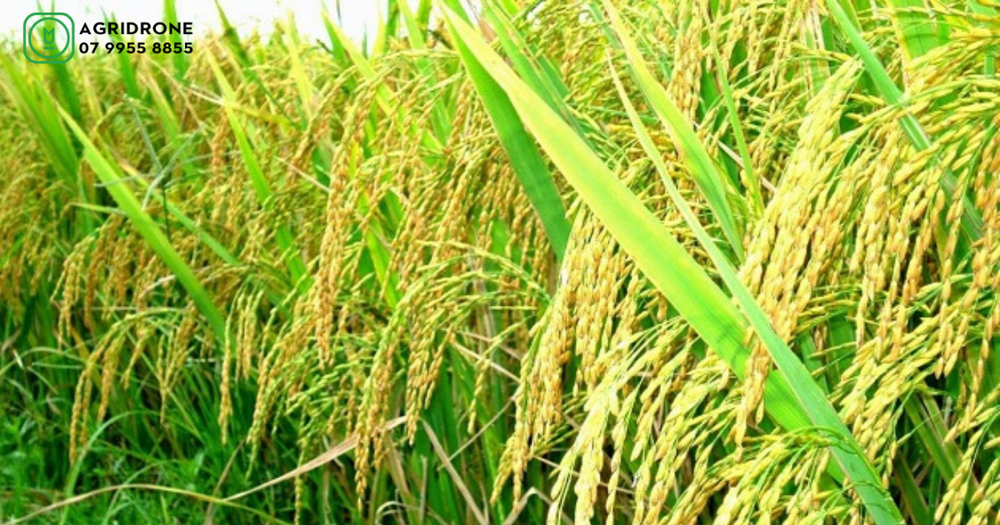
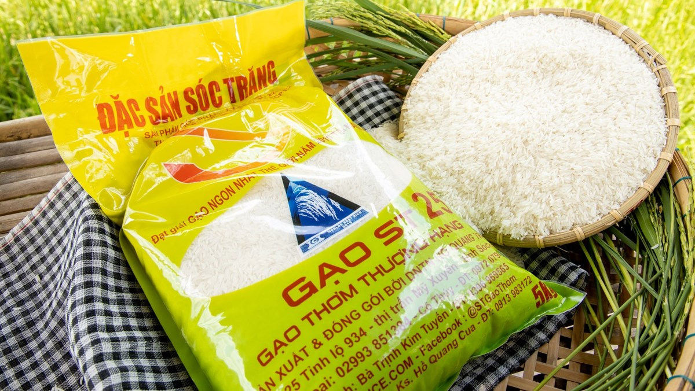
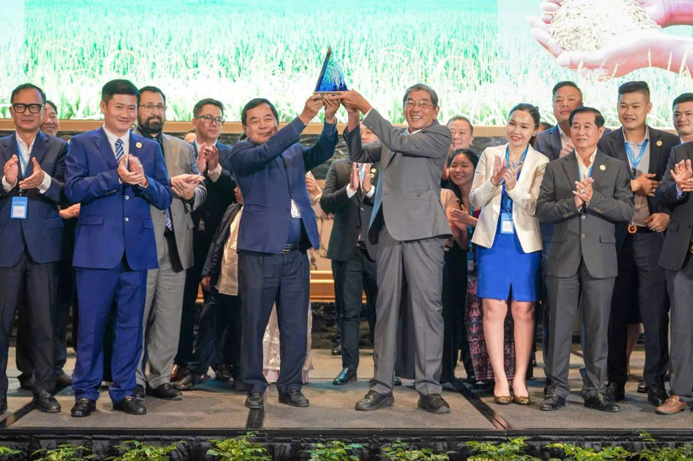

Câu chuyện về giống lúa ST25 – thành quả của hành trình nghiên cứu, sáng tạo và tâm huyết của những nhà khoa học Việt Nam.
KHÁM PHÁ ST25 →
Kỹ sư Hồ Quang Cua sinh ra tại Sóc Trăng, tốt nghiệp ngành Trồng trọt, Trường Đại học Cần Thơ năm 1978. Sau khi ra trường, ông công tác trong ngành nông nghiệp tỉnh Sóc Trăng và từng giữ chức Phó Giám đốc Sở Nông nghiệp và Phát triển nông thôn. Với niềm đam mê nghiên cứu khoa học, ông dành nhiều năm tâm huyết lai tạo và phát triển các giống lúa thơm chất lượng cao. Thành tựu tiêu biểu nhất là giống lúa ST25, đạt giải Gạo ngon nhất thế giới năm 2019. Những đóng góp của ông đã góp phần nâng cao giá trị hạt gạo Việt Nam, cải thiện đời sống người nông dân và khẳng định vị thế nông nghiệp Việt Nam trên trường quốc tế. Năm 2012, ông được phong tặng danh hiệu Anh hùng Lao động.
ST25 là một giống lúa thơm chất lượng cao của Việt Nam, được nghiên cứu và lai tạo bởi kỹ sư Hồ Quang Cua cùng các cộng sự, tiêu biểu là Tiến sĩ Trần Tấn Phương và Thạc sĩ Nguyễn Thị Thu Hương. Giống lúa này được chọn tạo tại tỉnh Sóc Trăng, thuộc vùng Đồng bằng sông Cửu Long. Tên gọi ST25 mang ý nghĩa đặc biệt, trong đó ST là viết tắt của Sóc Trăng – vùng đất đã gắn liền với quá trình nghiên cứu và phát triển dòng lúa thơm nổi tiếng này.
Để tạo nên thành công của ST25 là cả một hành trình nghiên cứu, lai tạo và chọn lọc kéo dài nhiều năm. Trước khi ST25 ra đời, nhóm nghiên cứu đã lần lượt phát triển nhiều giống lúa thuộc dòng ST như ST3, ST5, ST10, ST19, ST20 và ST24. Mỗi thế hệ đều được cải tiến về năng suất, chất lượng hạt gạo, hương thơm và khả năng thích nghi với điều kiện canh tác. Trên nền tảng những thành tựu đó, giống lúa ST25 tiếp tục được nghiên cứu, hoàn thiện và chính thức tạo nên dấu ấn đặc biệt trong ngành lúa gạo Việt Nam.
ST – Sóc Trăng Gạo thơm chất lượng cao
Giống lúa ST25 là thành quả nghiên cứu và lai tạo của nhóm 3 nhà khoa học tỉnh Sóc Trăng, gồm: Anh hùng Lao động, kỹ sư Hồ Quang Cua, tiến sĩ Trần Tấn Phương và thạc sĩ Nguyễn Thị Thu Hương. Trong đó, kỹ sư Hồ Quang Cua là người khởi xướng và giữ vai trò trưởng nhóm nghiên cứu. Ông tốt nghiệp ngành Trồng trọt, Trường Đại học Cần Thơ năm 1978 và có nhiều năm gắn bó với lĩnh vực nông nghiệp, đặc biệt là nghiên cứu, phát triển các giống lúa thơm chất lượng cao.
Đồng hành cùng ông là tiến sĩ Trần Tấn Phương, người có nhiều năm trực tiếp nghiên cứu, lai tạo giống lúa và có chuyên môn sâu về di truyền, chọn giống; cùng thạc sĩ Nguyễn Thị Thu Hương, một cộng sự quan trọng của nhóm. Quá trình tạo ra ST25 đòi hỏi nhiều năm thu thập nguồn gen, lai tạo giữa các giống lúa bố mẹ, chọn lọc qua nhiều vụ mùa và khảo nghiệm để tìm ra giống lúa có chất lượng tốt, ổn định. Đây là hành trình nghiên cứu lâu dài, với nhiều năm phát triển dòng lúa ST. Vì vậy, ST25 không phải thành quả của riêng một cá nhân mà là kết tinh từ kiến thức, kinh nghiệm và sự đóng góp bền bỉ của cả tập thể các nhà khoa học.
Đằng sau một giống lúa nổi tiếng là nhiều năm nghiên cứu, thử nghiệm, chọn lọc và hoàn thiện của các nhà khoa học.
Nhóm nghiên cứu tiến hành công tác lai tạo lúa. Họ thu thập nhiều nguồn gen, tìm kiếm và chọn lọc những đặc tính tốt phục vụ quá trình lai tạo.
Các thế hệ lúa được gieo trồng, theo dõi và chọn lọc qua nhiều vụ liên tiếp nhằm tìm ra những dòng có đặc tính phù hợp. Quá trình này đòi hỏi sự kiên trì và đánh giá kỹ lưỡng về chất lượng.
Nhóm nghiên cứu tiếp tục phát triển nhiều giống lúa thuộc dòng ST, từng bước cải thiện năng suất, chất lượng hạt gạo và hương thơm.
Sau nhiều năm hoàn thiện, ST25 khẳng định chất lượng và xuất sắc giành giải thưởng "Gạo ngon nhất thế giới" (World's Best Rice).


Đó là một sự đầu tư về thời gian, kiến thức khoa học và sự kiên trì của những người nghiên cứu.
Từ hình dáng hạt gạo đến hương thơm và chất lượng cơm, ST25 có nhiều đặc điểm tạo nên dấu ấn riêng.

Gạo ST25 nổi bật với hình dáng hạt thon dài, các hạt khá đồng đều, màu trắng trong và có vẻ ngoài sáng bóng, đẹp mắt. Đây là một trong những đặc điểm giúp gạo ST25 tạo ấn tượng với người tiêu dùng. Nhờ hình dáng đẹp cùng chất lượng hạt tốt, ST25 được xếp vào nhóm gạo thơm chất lượng cao của Việt Nam.

Hương thơm là một trong những đặc điểm tạo nên nét riêng của gạo ST25. Gạo có mùi thơm tự nhiên, dịu nhẹ, kết hợp giữa hương lá dứa và hương cốm non. Khi vo gạo và nấu chín, mùi thơm lan tỏa nhẹ nhàng, tạo cảm giác hấp dẫn. Cơm ST25 sau khi nấu vẫn giữ được hương thơm đặc trưng, kể cả khi để nguội.

Gạo ST25 khi nấu thành cơm có chất lượng tốt, nổi bật với độ dẻo mềm vừa phải, hạt cơm trắng, bóng và có vị ngọt tự nhiên. Cơm không quá khô cũng không bị nhão nếu được nấu với lượng nước phù hợp. Khi để nguội, cơm vẫn giữ được độ mềm dẻo và hương thơm đặc trưng.

ST25 có khả năng thích nghi tương đối tốt với điều kiện canh tác tại Đồng bằng sông Cửu Long, đặc biệt là những vùng sản xuất lúa – tôm có điều kiện phù hợp. Đây là một trong những yếu tố giúp giống lúa được nhiều nông dân quan tâm và lựa chọn sản xuất.

Nhờ hương thơm tự nhiên, độ dẻo mềm vừa phải và vị ngọt đặc trưng, gạo ST25 phù hợp với những bữa cơm gia đình cũng như nhu cầu sử dụng gạo thơm chất lượng cao. Chất lượng của giống lúa góp phần nâng cao giá trị hạt gạo Việt Nam và tạo thêm niềm tin đối với người tiêu dùng.
Gạo ST25 của Việt Nam lần đầu tiên đạt giải Nhất cuộc thi “Gạo ngon nhất thế giới” vào năm 2019 tại Manila (Philippines), dưới sự nghiên cứu và lai tạo của kỹ sư Hồ Quang Cua cùng các cộng sự. Thành tích này đã thu hút sự chú ý của thị trường quốc tế, tạo niềm tự hào cho ngành nông nghiệp Việt Nam. Tiếp nối thành công, ST25 tiếp tục giành giải Nhất vào năm 2023 tại Philippines và năm 2025 tại Phnom Penh (Campuchia), đồng giải với gạo Phka Romdoul của nước chủ nhà. Đặc biệt, năm 2026, ST25 tiếp tục đạt giải Nhì tại Philippines. Những thành tích này đã khẳng định chất lượng, thương hiệu và vị thế ngày càng cao của gạo Việt Nam trên thị trường quốc tế.

Sự ra đời của giống lúa ST25 mang nhiều ý nghĩa quan trọng đối với nền nông nghiệp nước ta. Đây là thành quả của quá trình nghiên cứu, sáng tạo và lao động bền bỉ của các nhà khoa học Việt Nam. ST25 góp phần nâng cao giá trị hạt gạo, cải thiện thu nhập cho người nông dân và thúc đẩy phát triển nền nông nghiệp chất lượng cao. Đồng thời, giống lúa này còn quảng bá hình ảnh đất nước, con người Việt Nam đến bạn bè quốc tế. Đặc biệt, ST25 là niềm tự hào dân tộc, khẳng định trí tuệ và khả năng sáng tạo của người Việt Nam.
Tìm hiểu thêm về hành trình của hạt gạo ST25 qua những bài viết và tư liệu tham khảo.
Tìm hiểu thêm về hành trình nghiên cứu và những đóng góp của kỹ sư Hồ Quang Cua.
ĐỌC BÀI VIẾT →Khám phá những dấu ấn của gạo ST25 tại cuộc thi Gạo ngon nhất thế giới.
ĐỌC BÀI VIẾT →Cùng tìm hiểu về quá trình nghiên cứu, chọn tạo và phát triển giống lúa thơm.
ĐỌC BÀI VIẾT →Video tư liệu giúp tìm hiểu thêm về câu chuyện và hành trình của giống gạo ST25.